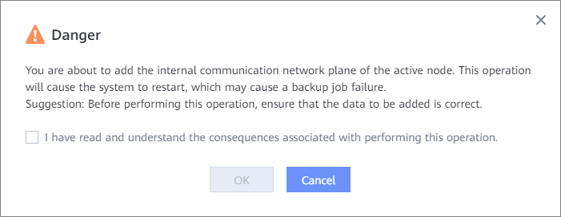

If you want to use cluster HA, perform operations in this section to add an internal communication network plane for the active node for communication among nodes in the backup cluster.
Prerequisites
- Before configuring cluster HA, ensure that Network Time Protocol (NTP) automatic synchronization has been configured for each node on DeviceManager. For details, see "Setting the Device Time" in the Administrator Guide.
- At least two IP addresses have been reserved for the internal communication network plane of the active node.
Precautions
- After the internal communication network plane of the active node is added, the system restarts and backup jobs may fail.
- After the internal communication network plane is added and member nodes are added, the internal communication network plane cannot be modified. Exercise caution when performing this operation.
Procedure
- Choose .
- Click Backup Cluster.
- In the row that contains the active node, choose .
- In the displayed dialog box, enter the name of the internal communication network plane. You can reuse the backup network plane or create an internal communication network plane on DeviceManager.
- To query the backup network plane name when the backup network plane is reused, perform the following steps:
- On the Backup Cluster page, click the name of the active node.
- In the window that is displayed on the right, click Open the device management platform to go to the DeviceManager page.
- Choose System > Container Service > Network Planes to view the network plane name.
- Create an internal communication network plane on DeviceManager. For details about how to create an internal communication network plane, see "Adding an Internal Communication Network" in the Administrator Guide.
- To query the backup network plane name when the backup network plane is reused, perform the following steps:
- Click OK.
- In the Danger dialog box that is displayed, confirm the information, select I have read and understand the consequences associated with performing this operation., and click OK.


To modify or delete an added internal communication network plane, choose or in the row that contains the active node. After a member node is added subsequently, the internal communication network plane cannot be modified or deleted.